Øster Bjerrergrav 1
Ziemlich feinkörniger, blaugrauer Granit
Höhe ü. d.Erdboden: 215 cm
insgesamt: 270 cm
Größte Breite: 180 cm
Dicke ca: 40 cm
Runenhöhe: 17 - 20 cm
Runeninschrift :
Tove errichtete diesen Stein für ihren Mann Tomme, (ein wohlgebürtiger) Thegn.
Er ... Tvegge Wetzstein.
Øster Bjerregrav 2
Feinkörniger, grauer geschichteter Granit, mit eingesprengtem groben, rötlichen Korn
Höhe: 140 cm
Größte Breite: 70 cm
Größte Dicke: 40 cm
Runenhöhe: 9 / 10,5 / 16,5 cm
Runeninschrift :
Gyde errichtete diesen Stein für Thorbjørn, ihren Ehegatten, einen sehr wohlgebürtigen Thegn.
Und Thord ritzte diese Runen.
50 - Øster Bjerregrav 1 - Letztes Update 10.09.2025
Listennummer: DR 98 / DK MJy 35
| Navidaten: 56.48870 9.90502 oder: Kirkevej 11, 8920 Randers NV |
Transliteration: tuf(a) : r(i)--(i) : stin (:) þani : auftiR : tum... | uar : s(i)... | ...n (:) þikn : saR : u-... | ...(u)r : tuika : hin
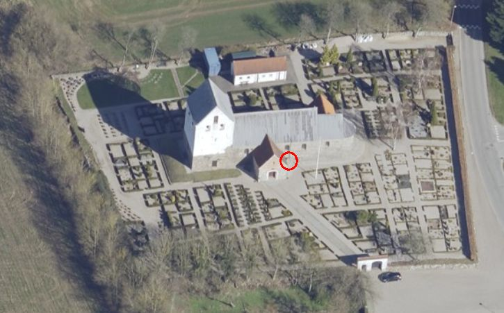
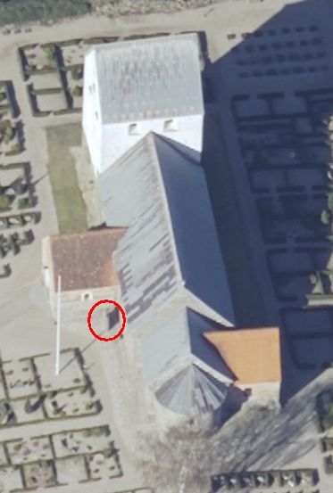
Das ist ein Luftfoto vom 02.04.2023 von Skråfoto - Lizenz: CC BY 4.0 - das die Kirche von Øster Bjerregrav zeigt. Skråfoto ist eine Webanwendung, die von Klimadatastyrelsen weltweit kostenlos bereitgestellt wird. Die Aufnahmen werden seit 2017 alle zwei Jahre erneuert und neben einer Senkrechtaufnahme wird ein Schrägbild aus jeder Himmelsrichtung angeboten, das man über eine Adresssuche aufrufen kann. Den Standort des großen Runensteins habe ich rot eingekreist, der kleinere steht im Waffenhaus.
Diese Runeninschrift wird von den Runologen in die Zeit von 970 - 1020 datiert. Die unvollständige Inschrift beginnt mit der linken Linie - von unten nach oben. Danach folgt die nächste Linie nach rechts von unten nach oben und zuletzt die rechte Linie entgegengesetzt - bustrophed - von oben nach unten - hier von mir visualisiert.
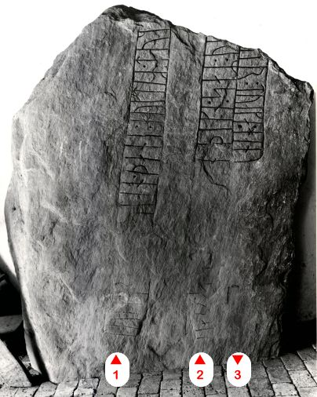
Bildquelle: Digitale Sammlung des Nationalmuseums Kopenhagen entnommen - Lizenz: CC-BY-SA - Leserichtung von mir eingezeichnetAusführungen aus der dänischen Runendatenbank - übersetzt: "Sowohl Tove als auch Tomme sind bekannte Namen in den dänischen Runensteintexten. Es ist unklar, wie die Endung Tvegge Hén mit dem Rest der Inschrift zusammenhängt. Der männliche Name Tvegge ist sonst nur als Spitzname für Odin bekannt und kommt auch auf dem Sjelle-Stein vor. Es wird aus dem Zahlenwort zwei gebildet und hat die Bedeutung das Doppelte. Der Beiname Hén bedeutet Wetzstein, bezieht sich aber offenbar auf Initiativlos, Oberflächlichkeit.
Die älteste bekannte Mitteilung über diesen Runenstein ist eine Zeichnung von einem Herrn Niels Lindberg aus dem Juli 1868. Damals lag er im Waffenhaus, unter dem Portal der Kirche. Diese Zeichnung sollte eigentlich laut Lis Jacobsen/Erik Moltke, Danmarks Runeindskrifter, 1942, Textband, Nr. 98 / Sp. 133, in der Hinterlassenschaft von P.G. Thorsen in der Königlichen Bibliothek in Kopenhagen in der Pappschachtel Nr. 17 aufbewahrt sein. Dort fand ich sie bei meinem Besuch im September 2022 aber leider nicht vor.
Eine kurze Erwähnung findet der Runenstein dann im Jahre 1875 in dem Buch von J.P. Trap (*19. September 1810 - 21. Januar 1885, dänischer Kabinettssekretär und topografischer Autor - link-LIVES - Bestattungsprotokoll)
 Bildquelle:
Wikipedia
-
Lizenz:
Public Domain
Bildquelle:
Wikipedia
-
Lizenz:
Public Domain
"Statistisk-topographisk beskrivelse af kongeriget Danmark", Volume 5, 1875, S. 437 - übersetzt: "...Dieses (Kirchen)Portal ruht einem vorliegenden Bericht zufolge auf einem großen Runenstein, dessen Inschrift aber sehr verschlissen ist."
Erst 1884 wurde er dort herausgenommen und nun war zu erkennen, dass die Spitze abgeschlagen war. Die Steinoberfläche ist ebenfalls teilweise abgeschlagen, aber bereits zur Zeit der Runenritzung war sie sehr uneben. Daneben hat die Inschrift durch die Kirchgänger, die jahrhundertelang darübergingen schwer gelitten.
Bei seiner Herausnahme fand sich unter ihm noch ein weiterer Runenstein, der als Øster Bjerregrav 2 bezeichnet wird - siehe unten. Dieser Stein war östlich vom Waffenhaus aufgerichtet worden, während man den Stein 1 ins Waffenhaus brachte. Später wurden die Steine im Waffenhaus nebeneinander aufgestellt. Der Stein 1 steht seit Ende der 1990er Jahre wieder auf dem Kirchhof direkt rechts vom Waffenhaus, während der kleinere Stein 2 im Jahr 2001 darin aufgerichtet wurde. Stein 1 wurde durch den Steinkonservator Leif Vognsen in 2016 gründlich gereinigt.
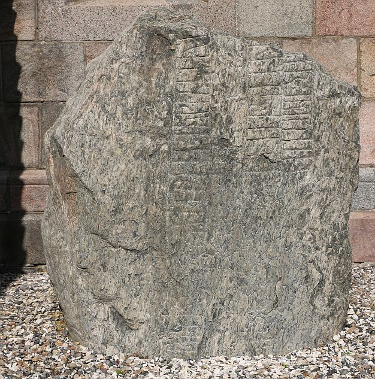
Eigenes Foto vom Donnerstag, dem 25.08.2016.
Der Runenstein findet Erwähnung in den beiden großen dänischen Runenwerken. Die Hinterlassenschaften der beiden Autoren/Professoren habe ich vom 26. bis 28.09.2022 in der Königlichen Bibliothek in Kopenhagen durchforstet.
Prof. P. G. Thorsen (*07.08.1811 - 06.05.1883, Bibliothekar, Runenforscher und Historiker - link-LIVES - Artikel: Levnedsbeskrivelser af de ved Københavns Universitets Firehundredaarsfest promoverede Doktorer, Illustreret Tidende 1882, Nr. 1235 - vom 27.05.1833 / Grabstein in Varde / Eheschließung in Varde am 19. August 1848)
 Fotografie
zw. 1863-1900 von
Fotograf Budtz Müller (*26.12.1837 -
30.12.1884) -
Det Kgl. Biblioteks billedsamling - Lizenz:
Public Domain
Fotografie
zw. 1863-1900 von
Fotograf Budtz Müller (*26.12.1837 -
30.12.1884) -
Det Kgl. Biblioteks billedsamling - Lizenz:
Public Domain
bringt ihn in seinem Werk "De danske runemindesmærker beskrevne og forklarede, anden Afdeling, Jyllands Runemindesmærker, I. Afbildninger, 1879" unter der Nr. 66 - hier allerdings nur als Texteintrag.
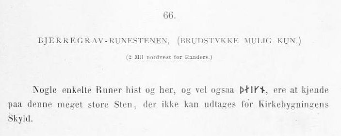
In seinem 1880 erschienenen Textband II findet sich auf der S. 174 auch nur eine kurze Abhandlung, da der Runenstein zu der Zeit noch im Eingangsbereich der Kirche verbaut war. Er beklagt, dass der große Stein noch immer nicht herausgeholt wurde, was erst 1844 erfolgte.
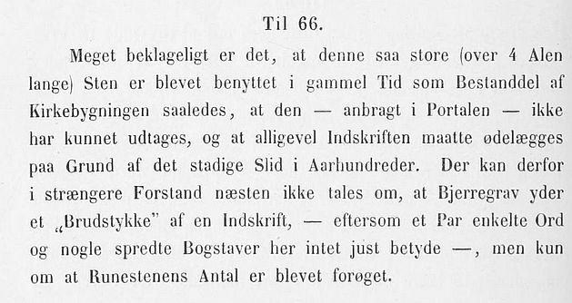
Prof. Ludv. F. A. Wimmer (*07.02.1839 - 29.04.1920, Philologe und Runenforscher - link-LIVES - Politiets registerblade - Bestattungsprotokoll)
 Bildquelle:
Fotografie zw. 1877-1900 von Fotograf Hansen & Weller
-
Det Kgl. Biblioteks billedsamling - Lizenz:
Public Domain
Bildquelle:
Fotografie zw. 1877-1900 von Fotograf Hansen & Weller
-
Det Kgl. Biblioteks billedsamling - Lizenz:
Public Domain
bringt seine Studien in seinem großformatigen Werk De danske runemindesmærker undersøgte og tolkede af Ludv. F. A. Wimmer, Andet Bind, Runestenene i Jylland og på øerne. 1899-1901 unter der Nr. 44, S. 202ff. Er hat den Runenstein persönlich vor Ort am 24. August 1878 und am 11./12. Juli 1892 untersucht. Bei seinem ersten Besuch fand Wimmer den Stein noch in der Fundposition, die unten die linke Abbildung zeigt. Bei seinem zweiten Besuch war der Runenstein nach einer umfassenden Kirchenrenovierung bereits herausgenommen worden.
Die in seinem Werk abgebildeten Zeichnungen von Prof. Julius Magnus Petersen (*04.09.1827 - 31.01.1917, Archäologischer Zeichner und Restaurator - link-LIVES - Bestattungsprotokoll)
 Bildquelle: Fotografie
von 1903 von Fotograf Marius Christensen
(*24.06.1874 -
25.06.1907) -
Det Kgl. Biblioteks billedsamling - Lizenz:
Public Domain
Bildquelle: Fotografie
von 1903 von Fotograf Marius Christensen
(*24.06.1874 -
25.06.1907) -
Det Kgl. Biblioteks billedsamling - Lizenz:
Public Domain
möchte ich hier wiedergeben - eigener Scan.
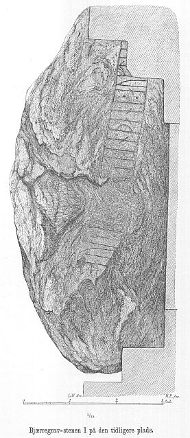
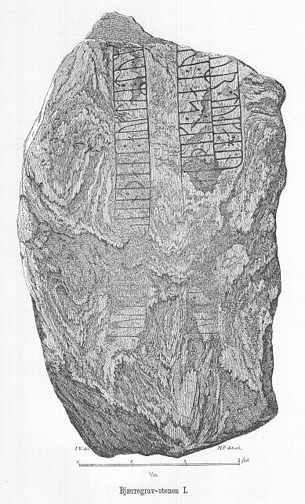
Ludv. F. A. Wimmer hat seine jahrelangen Aufzeichnungen der "Kgl. Bibliotek" in Kopenhagen überlassen. Ein Verzeichnis darüber wurde 1915 in Buchform herausgegeben - "Collectio runologica Wimmeriana: Fortegnelse over Ludv. F. A. Wimmers runologiske o. a. Samlinger i Det kgl. Bibliotek"
In seinen Unterlagen in der Königlichen Bibliothek in Kopenhagen befinden sich in "III - Originaltegninger af de danske Runemindesmærker, udførte paa Undersøgelsesrejserne af Magn. Petersen og kontrollerede paa Stedet af Ludv. Wimmer, samt Prøvetryk af de paa Grundlag af de nævnte Tegninger, Aftryk o. s. v. til De danske Runemindesmærker" udførte Afbildninger med Wimmers Rettelser" unter der Nummer 55 diese Zeichnungen von Magnus Petersen. Die Zeichnung zur Fundlage hat er auf den 24.08.1878 datiert, nach der Herausnahme auf seiner neuerlichen Zeichnung nur "1892" eingetragen. Er war aber mit Wimmer am 11. und 12. 07.1892 vor Ort. Darüberhinaus findet sich in seiner Hinterlassenschaft noch eine undatierte Zeichnung auf Transparentpapier, die auch erst nach der Herausnahme des Steins angefertigt wurde.


In der Sammlung von Prof. Wimmer hat sich auch der Brief vom 03.08.1884 von Provst Andreas Fabricius Krarup Vilstrup (*17.06.1824 - 05.04.1910, von 1878-1905 Pfarrer in Bjerregrav und Ålum - link-LIVES)
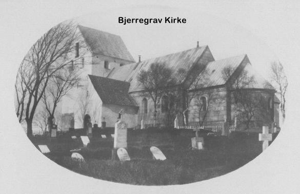
an ihn im Hinblick auf die Herausnahme dieses und die Entdeckung des 2. Runensteins erhalten.
Zwischen Montag, 26.09.2022, und Mittwoch, 28.09.2022, habe ich in der Königliche Bibliothek - Den sorte Diamant - in Kopenhagen nach Online-Vorbestellung zahlreiches Material zur Ansicht erhalten. Ich durfte mir Aufzeichnungen machen, sie aber auch uneingeschränkt fotografieren.
Diese sw Aufnahme hat Erik Moltke (*04.04.1901 - 19.10.1984, Runologe, Historiker)
 Bildquelle: Scan von Buchumschlag "Runerne i Danmark og ders
oprindelse" - Erik Moltke - 1976 - Lizenz:
CC-BY-SA
Bildquelle: Scan von Buchumschlag "Runerne i Danmark og ders
oprindelse" - Erik Moltke - 1976 - Lizenz:
CC-BY-SA
am 07.07.1930 aufgenommen (rechte Aufnahme Runenzeichen nachgefahren).
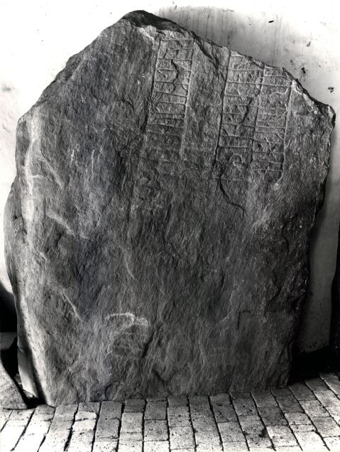
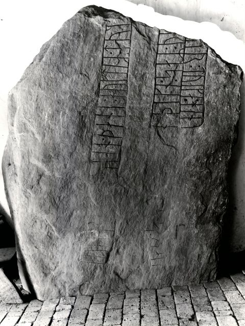
Quelle: Digitale Sammlung des Nationalmuseums Kopenhagen entnommen - Lizenz: CC-BY-SA
Im Vorfeld zu dem 2016 erschienenen Buch von Lisbeth M. Imer (*1973, Runologin am Nationalmuseum Kopenhagen) "Danmarks Runesten - en fortælling" reiste sie mit dem Fotografen Roberto Fortuna zur Bestandsaufnahme durch die Lande. Dieser hat die Runensteine mit Schräglicht aufgenommen und darüber wirklich herausragende Fotos erzielt. Diese Fotografie stammt vom 08. März 2012.
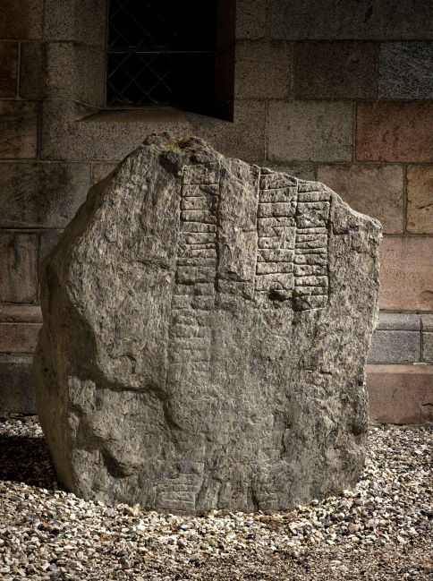
Der digitalen Sammlung des Nationalmuseums Kopenhagen entnommen - Lizenz: CC-BY-SA
Den Eintrag zu diesem Runenstein aus der dänischen Runen Datenbank im Internet kann man hier abrufen.
Die Informationen in "Fund og Fortidsminder" zu dem Runenstein finden sich hier. Darin ist inzwischen dieser Zustandsbericht des Steinrestaurators Leif Vognsen aus dem Jahr 2018 eingebettet.
Über diesen Link finden sich zu dem Runenstein Informationen des Forschungsprojektes "Runes" der Akademie der Wissenschaften zu Göttingen.
Øster Bjerregrav 2 - Letztes Update 10.09.2025
Listennummer : DR 99 / DK MJy 36
Transliteration: kuþa : risþi : stin : þansi : auft|(i)R : þurbiurn : buta : sin : | miuk : kuþan : þikn : ian | þurþr : rist : runaR | þasi
Als man 1884 den großen Runenstein Øster Bjerregrav 1 entfernte, der unter dem Portal vom Waffenhaus zur Kirche entdeckt worden war, fand man diesen Runenstein darunter liegend. Er diente dem Bauwerk als Fundament, oder in Verbindung mit diesem. Dieser Neufund und die Bergung wurde Ludv. F. A. Wimmer in einem Brief vom 03.08.1884 vom örtlichen Provst Andreas Fabricius Krarup Vilstrup gemeldet - siehe oben. Dieser Brief hat sich zusammen mit 4 Blättern/Zeichnungen des Runensteins in der Collectio Runologica Wimmeriana, III, Nr. 56, erhalten. Bei der "Coll Wim" handelt es sich um die Ansammlung sämtlicher Aufzeichnungen seiner über 30-jährigen Studien. In einem Brief vom 11.09.1906 vermachte er seine Sammlung der Königlichen Bibliothek in Kopenhagen. Diese Sammlung war auch die wesentliche Grundlage für seinen großes Runenwerk - De danske runemindesmærker undersøgte og tolkede af Ludv. F. A. Wimmer.
Man stellte den Runenstein zunächst östlich vom Waffenhaus auf, dann standen beide im Waffenhaus. Dieser Runenstein stand zuletzt Jahre lang neben dem Stein 1 im Freien. Nach einer gründlichen Reinigung wurde nur er im Jahr 2001 wieder im Waffenhaus aufgestellt. Auch diese Inschrift wird in die Zeit 970 - 1020 datiert. Die Inschrift wird als Bustrophedon gelesen - abwechselnde Schreibrichtung - und beginnt in der rechten Linie der Frontseite von unten nach oben gelesen. Es geht dann in der mittleren Linie von oben nach unten weiter und nun in der linken Linie von unten nach oben. Danach geht es auf der schmalen Seite mit der rechten Linie, von oben nach unten und endet in der kurzen Linie von unten nach oben gelesen.
Die Inschriftanordnung bei den Runenbändern mit einer gemeinsamen unteren Basislinie kennt man auch von anderen Runensteinen in diesem Gebiet (z.B. Langå 3, Grensten, Borup und Vester Tørslev).
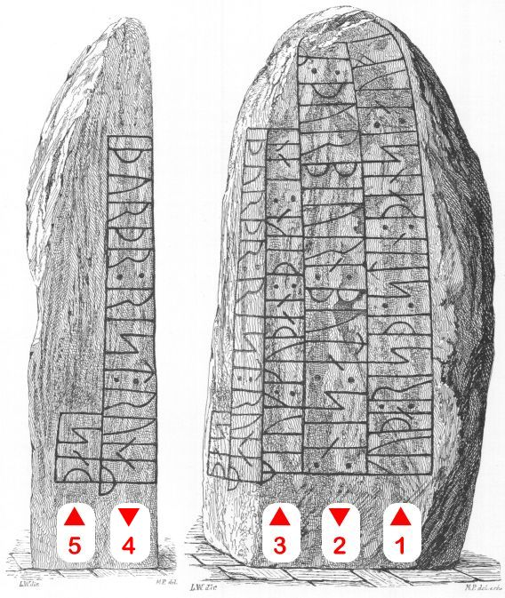
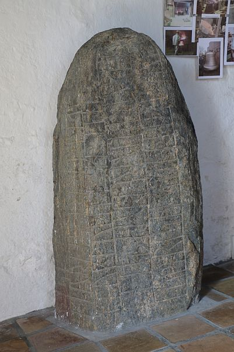
Bildquelle: Zeichnung von Magnus Petersen - Lizenz: Public Domain - Leserichtung von mir eingezeichnet / Eigenes Foto vom Donnerstag, dem 25.08.2016.
Prof. Ludv. F. A. Wimmer (*07.02.1839 - 29.04.1920, Philologe und Runenforscher - link-LIVES - Politiets registerblade - Bestattungsprotokoll)
Bildquelle:
Fotografie zw. 1877-1900 von Fotograf Hansen & Weller
-
Det Kgl. Biblioteks billedsamling - Lizenz:
Public Domain
berichtet über den Runenstein in seinem großen Werk "De danske runemindesmærker undersøgte og tolkede af Ludv. F. A. Wimmer, Andet Bind, Runestenene i Jylland og på øerne. 1899-1901" mit der Nr. 45, S. 210ff. Er hat den Runenstein persönlich vor Ort am 11./12. Juli 1892 untersucht.
Die darin abgebildete Zeichnung von Prof. Julius Magnus Petersen (*04.09.1827 - 31.01.1917, Archäologischer Zeichner und Restaurator - link-LIVES - Bestattungsprotokoll)
Bildquelle: Fotografie
von 1903 von Fotograf Marius Christensen
(*24.06.1874 -
25.06.1907) -
Det Kgl. Biblioteks billedsamling - Lizenz:
Public Domain
möchte ich hier wiedergeben - eigener Scan.
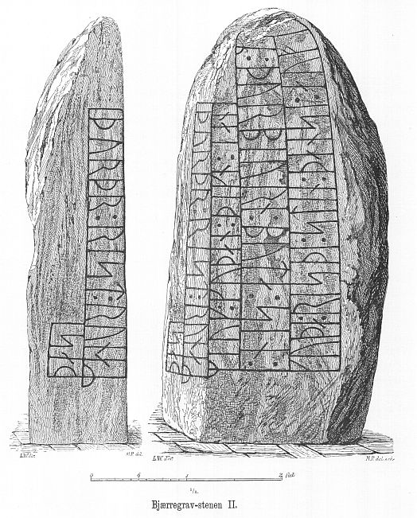
In seinen Unterlagen in der Königlichen Bibliothek in Kopenhagen - siehe oben - finden sich unter der Nummer 56 auch zwei Zeichnungen zu diesem 2. Runenstein. Die linke von Prof. Julius Magnus Petersen datiert mit "1892". Die Zeichnung auf Transparentpapier rechts davon könnte eine Vorarbeit dazu gewesen sein.


Erik Moltke (*04.04.1901 - 19.10.1984, Runologe, Historiker)
Bildquelle: Scan von Buchumschlag "Runerne i Danmark og ders
oprindelse" - Erik Moltke - 1976 - Lizenz:
CC-BY-SA
hat diese Fotos am 07.07.1930 aufgenommen - Rechte Aufnahme Runen nachgezeichnet.
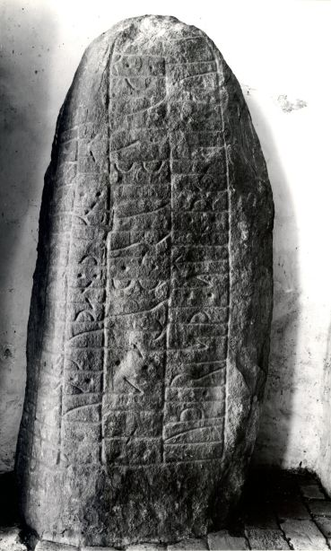
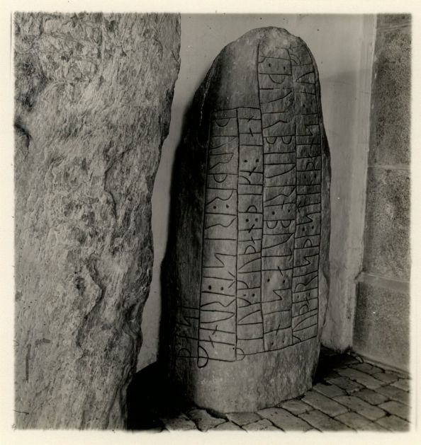
Quelle: Digitale Sammlung des Nationalmuseums Kopenhagen entnommen - Lizenz: CC-BY-SA
Im Vorfeld zu dem 2016 erschienenen Buch von Lisbeth M. Imer (*1973, Runologin am Nationalmuseum Kopenhagen) "Danmarks Runesten - en fortælling" reiste sie mit dem Fotografen Roberto Fortuna zur Bestandsaufnahme durch die Lande. Dieser hat den Runenstein mit Schräglicht bei Dunkelheit aufgenommen und darüber wirklich herausragende Fotos erzielt. Diese Fotografien stammen vom 08.03.2012.
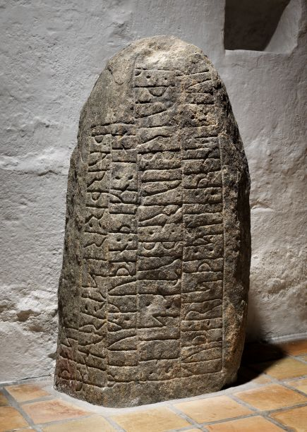
Quelle: Digitale Sammlung des Nationalmuseums Kopenhagen entnommen - Lizenz: CC-BY-SA
Den Eintrag zu diesem Runenstein aus der dänischen Runen Datenbank im Internet kann man hier abrufen.
Die Informationen in "Fund og Fortidsminder" zu dem Runenstein finden sich hier. Darin ist inzwischen dieser Zustandsbericht des Steinrestaurators Leif Vognsen aus dem Jahr 2018 eingebettet.
Über diesen Link finden sich zu dem Runenstein Informationen des Forschungsprojektes "Runes" der Akademie der Wissenschaften zu Göttingen.
Im Rahmen meiner 2022er Jütland Wikinger Tour war ich am Samstag, 04.06.2022, an der Kirche von Øster Bjerregrav und konnte diese Fotos machen.
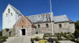 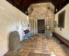 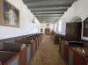 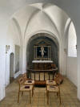 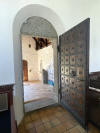


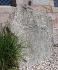 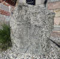 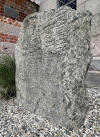 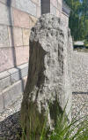 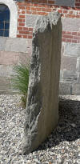 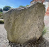 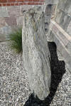


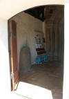 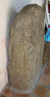 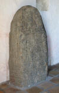 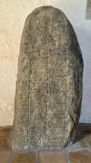 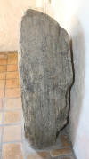 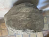


Davor war ich laut meinen jahrelangen Aufzeichnungen bereits im Sommer 1984 / im Sommer 1988 / am Donnerstag, 13.07.2000 / am Samstag, 26.05.2001, und nochmals am Donnerstag, 25.08.2016, an dieser Kirche mit ihren 2 Runensteinen.
Bei meinem Besuch am Donnerstag, 25.08.2016, war die Kirche geöffnet, sodass ich diese Fotos aufnehmen konnte:
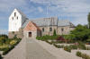 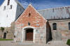 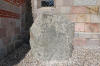 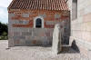 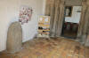 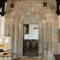 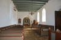


Hier mehrere Fotografien von meinem ersten Besuch in Øster Bjerregrav - im Sommer 1984.